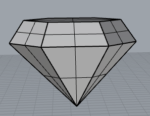
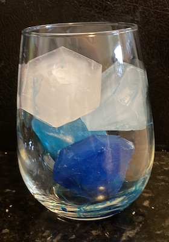

Diamond Mold
Over the past two weeks I have been learning how to make molds. Here is a recap of the progress I made in the first week:
Week 1: Building Diamonds
A few years ago, a co-worker brought in diamond shaped handmade soaps and I thought these were really awesome. The shape and color of her soaps was my inspiration for this week. I first created my diamond shape in Rhino using two hexagon polygons and a point as the beginning of the shape. I then concentrically aligned them, combined them with the loft command with the setting of split at tangents, then used the cap planar holes command, and this was the resulting beauty!

Next, I used the draft angle analysis. I was not surprised when I saw the divide of red and blue at the widest points of the polygon, but I was thinking It might be easier to print the mold symetrically down the the vertical center to create a mold where I could hide the seams in the seams of the diamond, but then I realized I would have a seam on the top of the diamond, so I went back to the original draft angle analysis. I also thought this would be the better way to explode the shape because I could fill it from the top and I could leave a hole open so I could see when the mold was fully filled, and wouldn’t have excess in the hole.


I created a surface that divided the shape and then I exploded it. I grouped the surfaces to create the two sides to the mold. Next I did a ribbon offset. Since my shape is divided on the horizontal axis, there was no need for me to make another offset with a 0 curve. I did use two offsets to create a planar surface which I connected to the ribbon offset. Then I extruded the sides of the planar surface to create the base of the mold. I learned about the shift command keyboard function to select only the top layer of the box to delete it. Finally, I used BooleanDiference to create the pour hole in the top of the top mold.


With both sides of my mold created, I added my keys. I did this by aligning the two pieces on top of each other and adding spheres for the keys. Next I copied all of the pieces, and used BooleanUnion on one side and BooleanDifference on the other. Finally, I had to take both pieces of the mold and add the surrounding box to use for the silicone. I drew the boxes and used the BooleanDifference command to create the silicone mold. I then printed it. That's my mold progress for the week. Keep reading to see my work for the second week.


Week 2: Finishing the Diamonds!
As you can tell from the image above, I had a few gaps in the printing on the side of the bottom mold. I tried a few different types of glue, including Elmers, putty, and Bondo, but none of them filled in the hole. I am thinking it is because the shape of the hole was more of a shingle construction, so it was hard for the glue to stay and remain smooth and adhered to my mold while I sanded. After trying multiple glues I decided I had to reprint the mold. This time I changed the infill to lines, which had more structure around the edges of the print, hoping that setting would help prevent the shingle gaps, and it did. Even my keys were cleaner and printed better.
With the new mold ready to go I began mixing my silicone. For my silicone I used OOMOO35. I gathered my supplies and headed to the balcony. After thoroughly reading the directions, per Professor Nadya's direction, I carefully started the mixing process. I must say, having face shields around, due to the pandemic, also came in handy for maintaining safety during this process. I carefully put equal parts of the blue mixture in one container, and pink in the other. Before I combined them, I stirred both really well, and then poured both into a shared container where I stirred the mixture for the recommended 3 minutes to ensure it was thoroughly mixed. Then I poured the silicone in the mold, and the waiting game began.
After six hours the silicone was cured, and it was time to begin making ice cubes. I didn't have any rubberbands at my house, so I used string I to secure my mold together, since I was pouring water in the mold. I also had this grandiose idea that I could add food coloring and food glitter to make really cool ice cubes where the food coloring and glitter were suspended in the middle of the ice cube, but I didn't realize that the water wouldn't freeze fast enough (these ice cubes took roughly 5.5 hours to freeze completely) and by the time the ice cube was completely frozen all of the food coloring had dispersed, and you couldn't really see the glitter. That was very disappointing. However, the mold was succcessful, so I continued playing with more colors.
I didn't think the string had an effect on the mold process, so I removed it for the next few molds, but then I realized that a little bit of water escaping was causing the tops of the diamonds to be smaller.
I went back to the string process and the mold was successful again. Although the visual color design of the ice cubes didn't turn out how I was originally planning, I do like the ombre colors and I am planning on buying food safe silicone so I can start making these more often.
